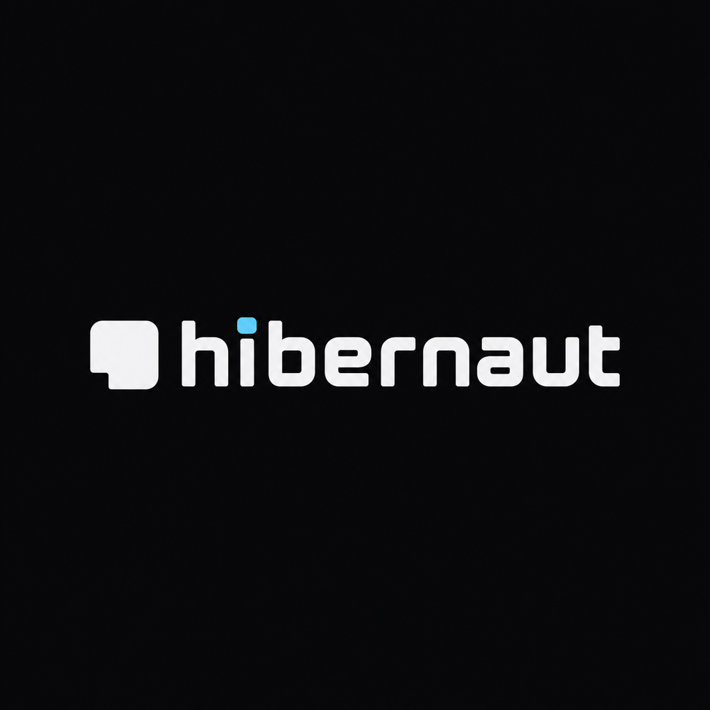

Hibernaut / wordmark font study
Ten OFL families · same word, weight and size · compare shape before choosing a palette
REFERENCE / supplied candidate
01 / Tomorrow600 · native glyphshibernaut
02 / Saira600 · native glyphshibernaut
03 / Oxanium600 · native glyphshibernaut
04 / Chakra Petch600 · native glyphshibernaut
05 / Exo 2600 · native glyphshibernaut
06 / Rubik600 · native glyphshibernaut
07 / Sora600 · native glyphshibernaut
08 / Space Grotesk600 · native glyphshibernaut
09 / Geist600 · native glyphshibernaut
10 / Lexend600 · native glyphshibernaut
Selected: Oxanium 600 + JetBrains Mono. Final lockups replace the native i-dot with a square accent dot. Sleeping mark geometry stays exact.